あとちょっとで完成
長きにわたってきたこの講座も最後です。がんばりましょう。
まず壁を作りましょう。ブロックがなくなったときに無限のかなたに飛んで行ってしまうのでね。
ブロックとかプレイヤーを作った時と同じように、細長い壁のObjectを作ってみましょう。
ブロックが配置されてるとこが覆えるぐらいでかくしましょう。
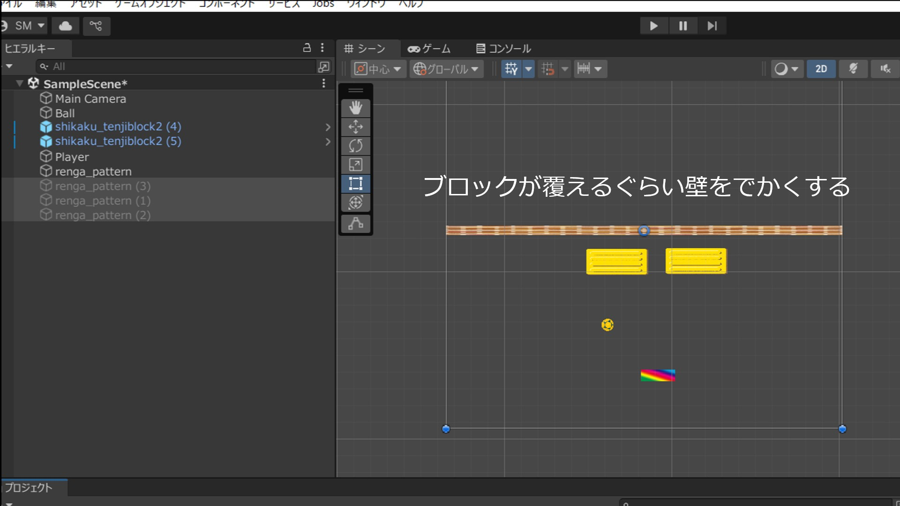
BoxColliderもつけてあげてください。ボールを跳ね返すためには必須です。
1枚壁できたら、残りの三方向にも壁を配置してあげてください。そうすればこのボールはもう二度とこの外に出ることはできません。かわいそうにねぇ。
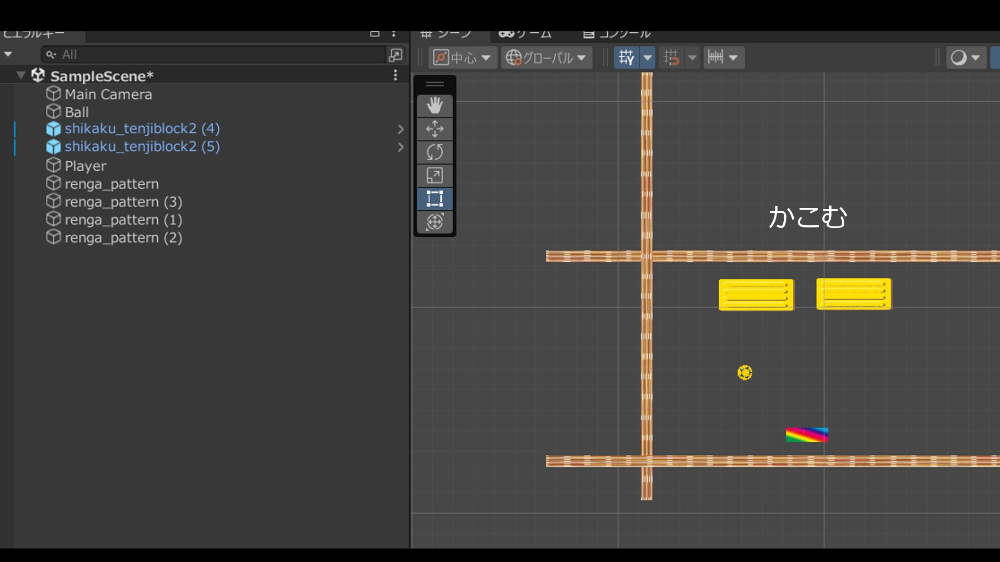
次に、ボールについてちょっといじってもらうとこがあります。それをやりましょう。
AssetsのCreateありますよね、普段C#ファイル出すとこ。いったんCreateまでクリックしてください。
そしたら今回は、ちょっと下のほうに2Dってところがあると思うので、それをクリックしてください。
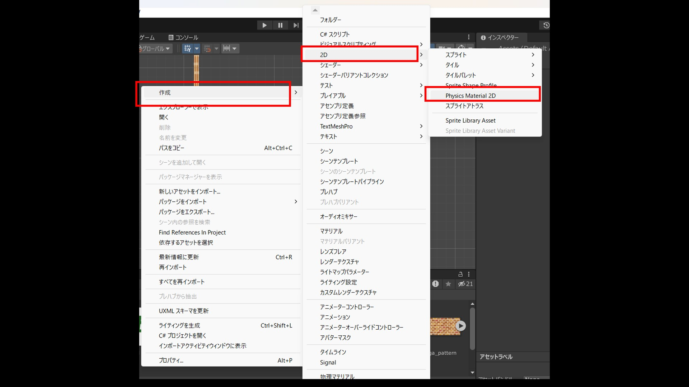
さらにメニューが出てきます。このPhysicsMaterial2Dっていうのを押してあげてください。これが必要です。
これは何かっていうと、壁とかに当たった時に反射とか摩擦とかを起こすようにするやつです。ちょっと今作ったやつクリックしてみてください。
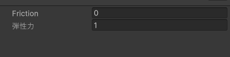
多分こんなのがinspectorにでてきます。上の数値は摩擦、したのは反発力です。
摩擦が0.1、反発が1ぐらいがほどよいと思われるので、変えてておいてください。後から変えれるのでご安心を。
つづいて、こいつをボールにくっつけてあげましょう。BallのInspectorにあるRigidBody2Dを見てみてください。
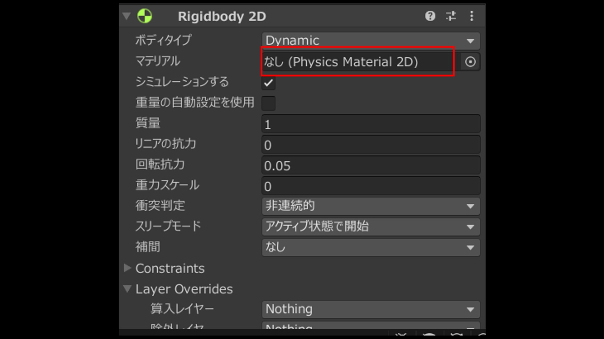
なんかNoneになってる空間ありますね。ここにさっき作ったPhysicsMaterial2Dをドラッグドロップしてやってください。
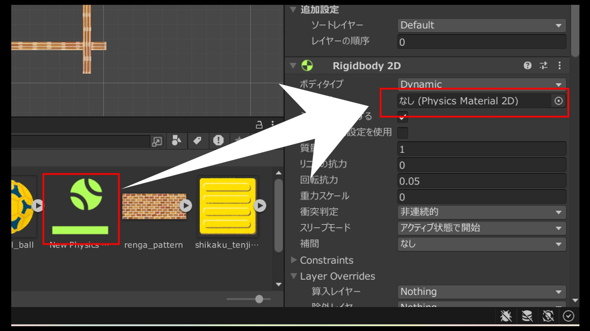
表示が変われば多分成功です。実行して見ると多分めっちゃ反射し始めます。
ゲームオーバーを作ろう
本当に終盤に近づいてきました。最後にゲームオーバー画面を表示できるようにしましょう。
いろいろやり方はあるんですが、今回はSceneを遷移させましょう。
というわけで、GameOverのシーンを作りましょう。
Assets→Createまで選んだら、今度はScene(シーン)ってところを選びましょう。簡単にSceneを新しく作れます。
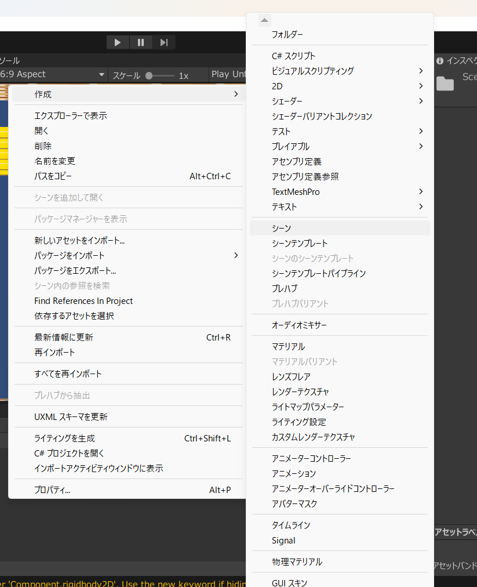
名前はGameOverとかにしてあげましょう。
何かが触ったときにGameOverのSceneに遷移するScriptを作りましょう。
またいつものようにC#ファイルを作ってください。さすがにもうできますよね？
名前はGameoverとかがいいんじゃないだろうか。
今回はこんなプログラムです。
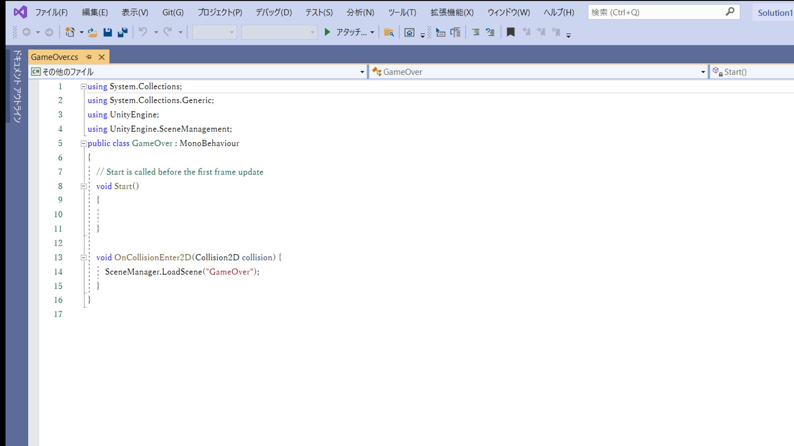
...この画像をぱっと見て書き始めた人へ。バグが出てないなら相当注意力が高いかUnityが初見じゃない人です。
そしてバグが出た人へ。とってもよくあるミスなのでこのあとの解説よんで覚えてくださいね。
まずいっちばん上のこの部分です。UnityEngineとか書いてあるところ、1行さらに書いてあることにお気づきでしょうか。
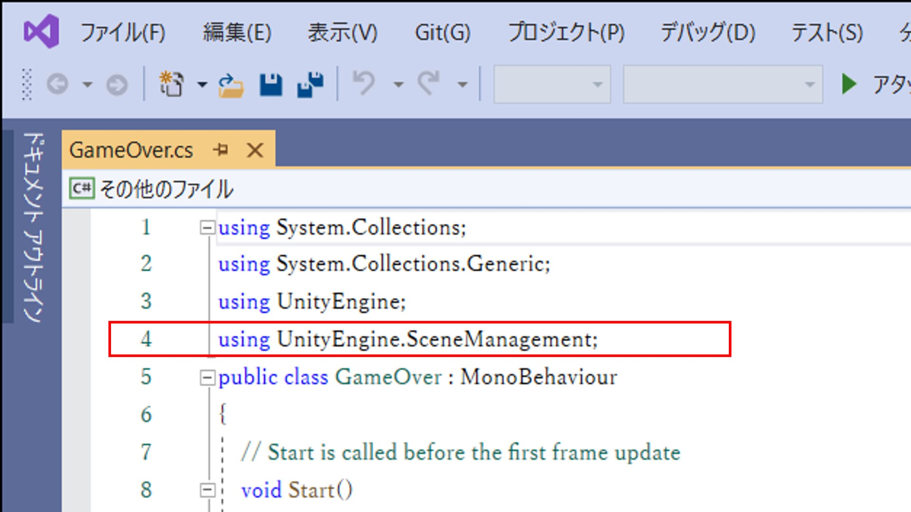
これ、UnityのScene機能をつかいますよーっていう宣言です。これがないとSceneが操作できません。
バグがでる理由はこれが書いてないからですね。
つづいてした。
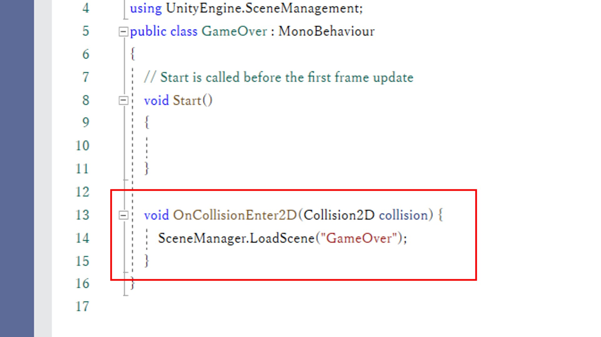
OnColliderEnterは、ブロックのScriptでもでてきたやつですね。
その中身のこれ。これは、()内の名前のSceneを呼び出すってやつです。
つまり今回のScriptは、「何かが自分に当たった時、指定したSceneを呼び出す」っていう流れだったわけですね。
これらが書けたら完成です。Editorに戻りましょう。
さっき作ったScriptを、下の壁Objectにだけアタッチしましょう。
間違ってほかの壁にアタッチすると、壁で反射するたびにゲームオーバーになるクソゲーになってしまいます。
次の工程です。さっき作ったSceneをゲームで扱えるようにします。
画面のいっちばん上のバーに、ファイルってボタンがあると思います。
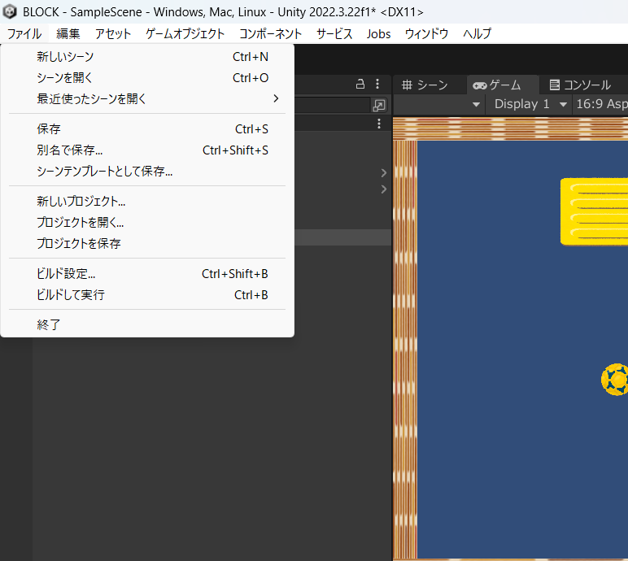
そこをクリックして出てくるメニューに、Build Settingってボタンがあると思うのでそれを押してください。
こんなのが出てきます。
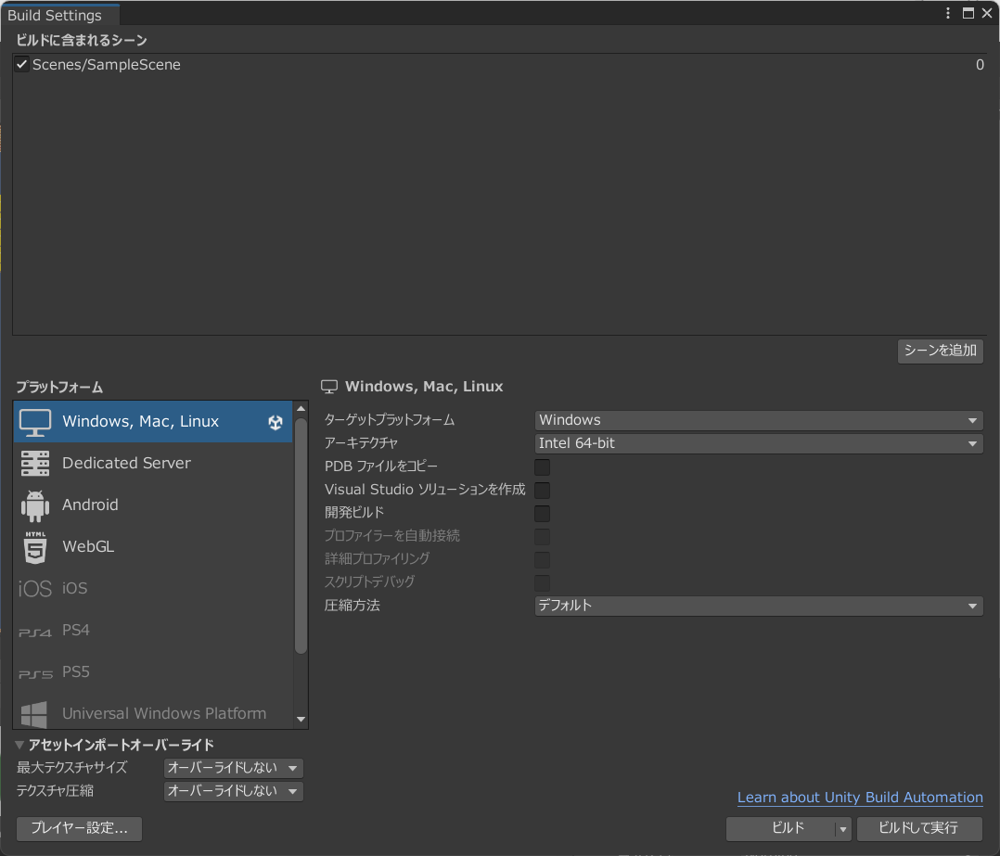
さっき作ったGameOverのSceneを、上のすかすかのところにドラッグ＆ドロップでおいてください。
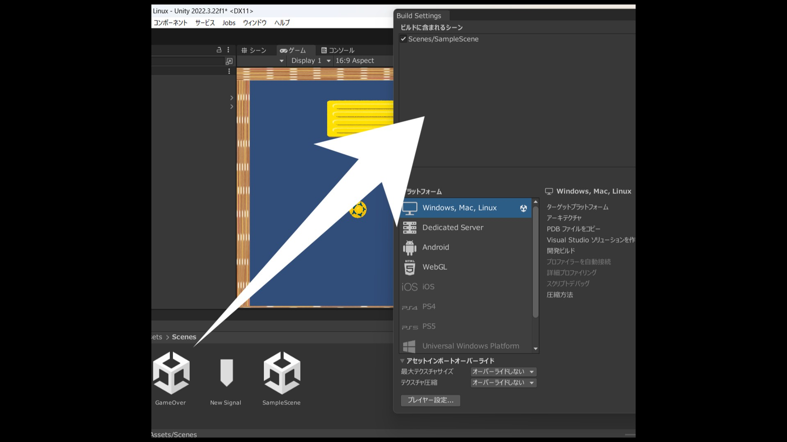
こんな感じにそのSceneの名前が表示されればOKです。このウィンドウ閉じても大丈夫。
実行してみましょう。ボールをわざと下に落としてみて...下の壁に当たった瞬間画面が空っぽになれば完成です。
停止ボタンを押せば、最初の画面に戻ってこれます。
ここまでできたあなたに問題を出してみます。どうやったらできるか考えて、成功できたら先輩とかに見せてください。
＜問題＞ゲームオーバーのSceneから、元のシーンに戻ることができるボタンを作りましょう。設定するキーはなんでもかまいません。